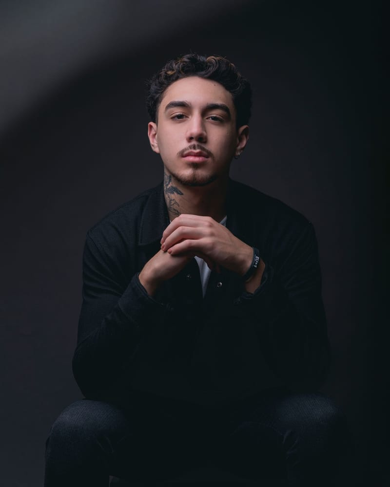
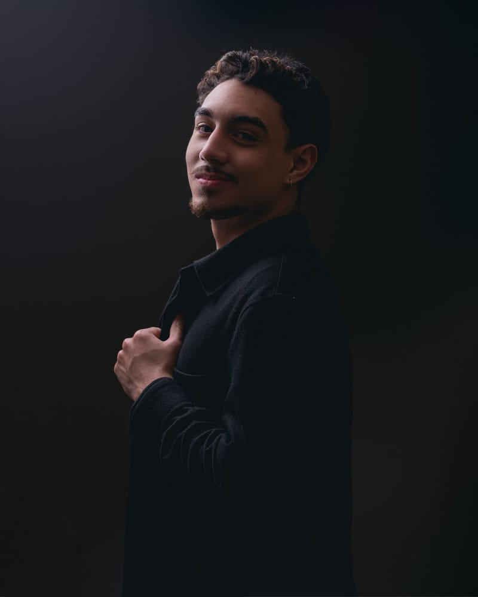
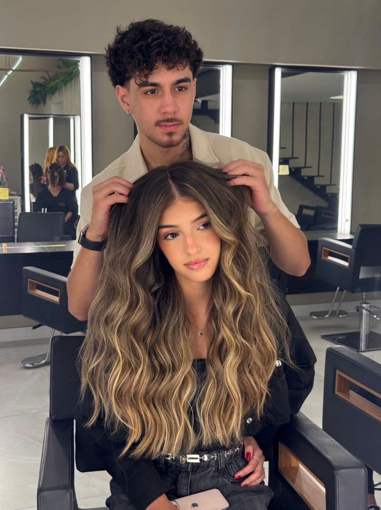

Menos danos por hábito errado
Você passa a saber o que evitar antes que o estrago aconteça.
Um curso direto ao ponto, criado pelo cabeleireiro Luca Ferreira, para você aprender a cuidar do seu cabelo no dia a dia sem estragar a cor nem a saúde do fio.
Acesso ao curso completo pela plataforma Kiwify.


Quem ensina
Cabeleireiro e criador de conteúdo sobre cuidados com o cabelo, em parceria com a Wella Professionals. No dia a dia, Luca compartilha orientações práticas sobre lavagem, hidratação, alisamento e produtos — o mesmo tipo de cuidado que agora está reunido, de forma completa, dentro deste curso.
Aqui você tem acesso a esse conhecimento de forma organizada, para aplicar direto na sua rotina.
Sobre o curso
Se você tinge, faz mechas, tem cacho ou já fez algum tipo de química, sabe como é fácil um hábito errado desmanchar semanas de cuidado. O curso 7 Formas de Ter o Cabelo Perfeito nasceu para resolver exatamente isso: te ensinar, passo a passo, como cuidar do cabelo em casa sem depender de sorte.
Ao longo do curso você entende como identificar o que o seu cabelo precisa, quais hábitos evitar e como montar uma rotina simples que preserva a cor e a saúde do fio — sem fórmulas complicadas e sem precisar ir ao salão toda semana.
O que você vai encontrar no curso
Como identificar o que sua raiz precisa e escolher o shampoo certo para não ressecar nem pesar o cabelo.
Orientações específicas para loiros, morenos e cacheados — cada tipo pede um cuidado diferente.
Quando vale a pena alisar, o que considerar antes e como evitar danos desnecessários.
Os erros mais comuns em casa — e o que fazer no lugar deles.
O que vale a pena somar à sua rotina para potencializar o resultado.
Pequenos hábitos constantes que sustentam o resultado a longo prazo.
Como equilibrar o desejo pela cor perfeita com a saúde do fio, sem abrir mão de nenhum dos dois.
Benefícios
Você passa a saber o que evitar antes que o estrago aconteça.
Sem depender de tentativa e erro para escolher produto.
Cuidados diários que ajudam a cor a durar mais entre uma visita e outra ao salão.
Orientações práticas, pensadas para o dia a dia real, não para um mundo ideal.
Para quem é
A mudança
Os resultados dependem da aplicação constante das orientações e das características individuais de cada cabelo.
Resultado real

Acesse o curso 7 Formas de Ter o Cabelo Perfeito e aprenda, com Luca Ferreira, a manter seu cabelo bonito e saudável todos os dias.
6x de R$ 5,61 no cartão
ou R$ 29,90 à vista
Perguntas frequentes
Não. O curso ajuda tanto quem já tem cor no cabelo quanto quem está pensando em colorir e quer entender como manter a saúde do fio.
Sim. Há orientações específicas para cabelos cacheados, além de loiros e morenos.
O curso sai por 6x de R$ 5,61 no cartão ou R$ 29,90 à vista.
O acesso é vitalício: uma vez dentro do curso, você pode assistir quando quiser, no seu tempo, sem prazo para expirar.
Logo após a compra, você recebe o acesso no e-mail que cadastrar na Kiwify.